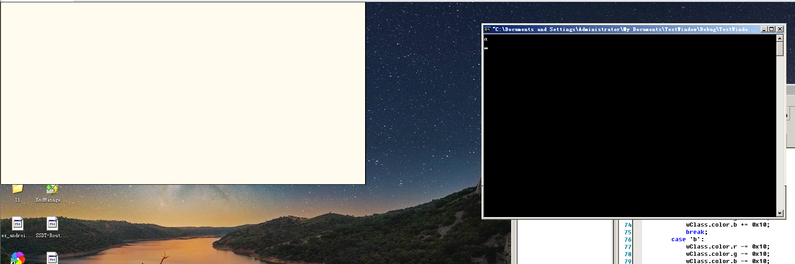
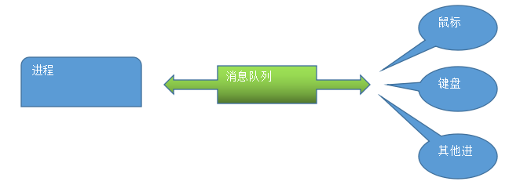
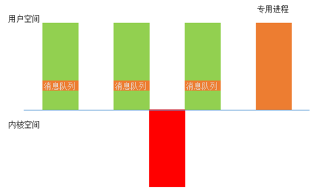

# 楔子
接触过编程的人，或多或少用到过消息机制，但大多数人（包括我自己）只是知道相关 API 的基本用法，却不知道它是如何实现的
从本章起，我们将带着以下几个问题一起来学习消息机制：
- 什么是窗口句柄？在哪里？有什么用？
- 什么是消息？什么是消息队列？消息队列在哪？
- 什么是窗口过程？窗口过程是谁调用的？没有消息循环窗口过程会执行吗？
- 为什么要有 w32k.sys 这个模块？
- 为什么只有使用图形界面的程序才可以访问 KeServiceDescriptorTableShadow?
- 界面 "卡死" 的时候为什么鼠标还可以动？
# 画一个简单的窗口
从设计层面理解 Windows 的消息机制是怎么来的。
#include <stdio.h> | |
#define _WIN32_WINNT 0x500 | |
#include <windows.h> | |
typedef struct _Color | |
{ | |
DWORD r; | |
DWORD g; | |
DWORD b; | |
}Color; | |
typedef struct _WindowClass | |
{ | |
DWORD x; | |
DWORD y; | |
DWORD width; | |
DWORD height; | |
Color color; | |
}WindowClass; | |
// 按照 WindowClass 的参数，将 hdc 中的数据打印到指定设备 | |
void PaintWindows(HDC hdc, WindowClass *p) | |
{ | |
HBRUSH hBrush; | |
hBrush = (HBRUSH)GetStockObject(DC_BRUSH); | |
SelectObject(hdc, hBrush); // 画刷 | |
SetDCBrushColor(hdc, RGB(p->color.r, p->color.g, p->color.b)); | |
MoveToEx(hdc, p->x, p->y, NULL); | |
LineTo(hdc, p->x+p->width, p->y); | |
LineTo(hdc, p->x+p->width, p->y+p->height); | |
LineTo(hdc, p->x, p->y+p->height); | |
LineTo(hdc, p->x, p->y); | |
Rectangle(hdc, p->x, p->y, p->width, p->height+1); | |
DeleteObject(hBrush); | |
} | |
int main() | |
{ | |
char cMessage; // 消息 | |
HWND hwnd; // 画在哪 | |
HDC hdc; // 显卡缓存 | |
// 设置窗口参数，长宽高之类的 | |
WindowClass wClass; | |
wClass.x = 0; | |
wClass.y = 0; | |
wClass.width = 800; | |
wClass.height = 400; | |
wClass.color.r = 0xEF; | |
wClass.color.g = 0xEB; | |
wClass.color.b = 0xDE; | |
// 画在哪 | |
hwnd = GetDesktopWindow(); | |
//hwnd = FindWindow("dbgviewClass", NULL); | |
// 获取 DC 设备句柄：可以把 DC 理解成显卡缓存 | |
hdc = GetWindowDC(hwnd); | |
for(;;) | |
{ | |
// 画窗口 | |
PaintWindows(hdc, &wClass); | |
cMessage = getchar(); | |
switch(cMessage) | |
{ | |
case 'a': | |
wClass.color.r += 0x10; | |
wClass.color.g += 0x10; | |
wClass.color.b += 0x10; | |
break; | |
case 'b': | |
wClass.color.r -= 0x10; | |
wClass.color.g -= 0x10; | |
wClass.color.b -= 0x10; | |
break; | |
} | |
} | |
return 0; | |
} |
运行结果：

我们发现我们画的这个傻瓜窗口：
- 被其它窗口覆盖后就消失了
- 只能接收键盘发送的消息
那么如何使窗口能够接收所有消息呢？
答案：将所有消息放入一块内存中，这块内存被称之为 “消息队列”
# 消息队列
描述：本质上是一种数据结构，当对象接收到消息时，将接收到的所有消息放入消息队列中，等待对象进行处理
规则：先进先出

# 消息队列在哪？
我们假设把消息队列放到用户空间，那么就要有一个专用进程去把这些消息放到各个进程的消息队列中，这就涉及了跨进程通信的问题，因为是这个专用进程负责监听消息，它首先能得到这些消息，然后在分发给其他进程的消息队列，这样的话就会有大量的时间花费在跨进程通信上，Windows 并没有采用这种解决方案，Linux 采用的是这种解决方案。
在 Linux 中：专用进程
- 使用专用进程捕获所有消息
- 判断消息所属进程，进行分发，将消息分配到目标进程的消息队列中

微软的解决方案：GUI 线程
注意 GUI 和 GDI 的区别。
<1> 当线程刚创建的时候，都是普通线程：Thread.ServiceTable-> KeServiceDescriptorTable
<2> 当线程第一次调用 Win32k.sys 时，会调用一个函数： PsConvertToGuiThread
主要做几件事：
a. 扩充内核栈，必须换成 64KB 的大内核栈，因为普通内核栈只有 12KB 大小。
b. 创建一个包含消息队列的结构体，并挂到 KTHREAD 上。
c. Thread.ServiceTable-> KeServiceDescriptorTableShadow
d. 把需要的内存数据映射到本进程空间
Windows 把消息队列存到了 0 环。
# 如何查找消息队列
//////// 那么在内核中可以借此判断线程是窗口程序还是控制台程序呢？
在 KTHREAD 中有一个成员 +0x130 Win32Thread : Ptr32 Void ，若当前程序使用了图形界面相关的 API，这个成员就指向一个结构体 THREADINFO ，其成员 PQ pq; 包含了当前线程的消息队列。
以下是我在 XP 源码中的发现：
从此函数开始：
PTHREADINFO PtiCurrent(VOID) | |
{ | |
ConnectIfNecessary(0); | |
return (PTHREADINFO)NtCurrentTebShared()->Win32ThreadInfo; | |
} |
typedef struct tagTHREADINFO { | |
W32THREAD; | |
//***************************************** begin: USER specific fields | |
PTL ptl; // Listhead for thread lock list | |
PPROCESSINFO ppi; // process info struct for this thread | |
PQ pq; // keyboard and mouse input queue | |
…… | |
…… |
下面是结构体 Q 或者说 tagQ 的结构：
/* | |
* Structure definition for messages as they exist on a Q. Same as MSG | |
* structure except for the link-pointer and flags at the end. | |
*/ | |
typedef struct tagQMSG { | |
PQMSG pqmsgNext; | |
PQMSG pqmsgPrev; | |
MSG msg; | |
LONG_PTR ExtraInfo; | |
DWORD dwQEvent; | |
PTHREADINFO pti; | |
} QMSG; | |
typedef struct tagMLIST { | |
PQMSG pqmsgRead; // next message to be read. This is a FIFO queue | |
PQMSG pqmsgWriteLast; // last message added to the queue. Used mainly for coalescing | |
DWORD cMsgs; // Count of messages. Used for optimizations and to enforce a max. | |
} MLIST, *PMLIST; | |
/* | |
* Message Queue structure. | |
* | |
* Note, if you need to add a WORD sized value, | |
* do so after xbtnDblClk. | |
*/ | |
typedef struct tagQ { | |
MLIST mlInput; // raw mouse and key message list. | |
PTHREADINFO ptiSysLock; // Thread currently allowed to process input | |
ULONG_PTR idSysLock; // Last message removed or to be removed before unlocking | |
ULONG_PTR idSysPeek; // Last message peeked | |
PTHREADINFO ptiMouse; // Last thread to get mouse msg. | |
PTHREADINFO ptiKeyboard; | |
PWND spwndCapture; | |
PWND spwndFocus; | |
PWND spwndActive; | |
PWND spwndActivePrev; | |
UINT codeCapture; // type of captue. See *_CAP* defines in this file | |
UINT msgDblClk; // last mouse down message removed | |
WORD xbtnDblClk; // last xbutton down | |
DWORD timeDblClk; // max time for next button down to be taken as double click | |
HWND hwndDblClk; // window that got last button down | |
POINT ptDblClk; // last button down position. See SYSMET(C?DOUBLECLK) | |
BYTE afKeyRecentDown[CBKEYSTATERECENTDOWN]; | |
BYTE afKeyState[CBKEYSTATE]; | |
CARET caret; | |
PCURSOR spcurCurrent; | |
int iCursorLevel; // show/hide count. < 0 if the cursor is not visible | |
DWORD QF_flags; // QF_ flags go here | |
USHORT cThreads; // Count of threads using this queue | |
USHORT cLockCount; // Count of threads that don't want this queue freed | |
UINT msgJournal; // See SetJournalTimer. Journal message to be delivered when timer goes off | |
LONG_PTR ExtraInfo; // Extra info for last qmsg read. See GetMessageExtraInfo | |
} Q; |
# 总结
<1> 消息队列存储在 0 环，通过 KTHREAD.Win32Thread 可以找到
<2> 并不是所有线程都要消息队列，只有 GUI 线程才有消息队列
<3> 一个 GUI 线程对应 1 个消息队列
# Reference
滴水课件